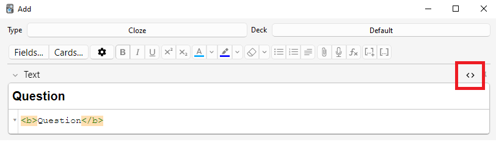
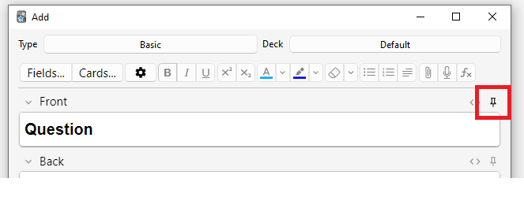
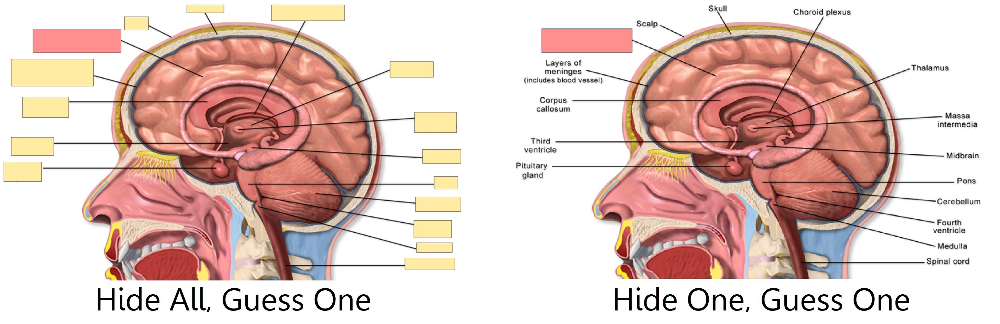

Добавление/редактирование
- Добавление карточек и заметок
- Добавление типа заметки
- Настройка полей
- Смена колоды / типа заметки
- Организация материала
- Возможности редактора
- Cloze deletion (Пропуски)
- Скрытие изображения (Image Occlusion)
- Редактирование IO-заметок
- Ввод нелатинских символов и диакритики
- Нормализация Unicode
Добавление карточек и заметок
Напомним из основ: в Anki мы добавляем заметки, а не
карточки, и Anki создаёт карточки автоматически. Нажмите Добавить (Add) в
главном окне — откроется окно добавления заметок (Add Notes).

В левом верхнем углу показан текущий тип заметки.
Если там не «Базовый» (Basic), возможно, вы добавили другие типы заметок при загрузке
общей колоды. Ниже предполагается, что выбран «Базовый» (Basic).
В правом верхнем углу показана колода, куда будут
добавлены карточки. Если нужна новая колода, нажмите на имя колоды и затем Добавить (Add).
Под типом заметки вы увидите кнопки и область с надписями «Лицевая» (Front) и «Оборотная» (Back).
Front и Back — это поля; их можно добавлять,
удалять и переименовывать кнопкой «Поля…» (Fields...) выше.
Под полями находится область «теги» (tags). Теги — это метки, которые можно
прикреплять к заметкам для удобной организации и поиска. Можно оставить
их пустыми или добавить один/несколько тегов. Теги разделяются пробелом.
Если в поле тегов написано
vocab check_with_tutor
…то добавленная заметка получит два тега.
Когда вы ввели текст в Front и Back, нажмите Добавить (Add) или
Ctrl+Enter (на Mac — Command+Enter),
чтобы добавить заметку в коллекцию. Одновременно будет создана карточка и
помещена в выбранную колоду. Чтобы отредактировать добавленную карточку,
можно нажать кнопку истории и найти её в обзоре.
Подробнее о кнопках между типом заметки и полями см. в разделе редактор.
Проверка дубликатов
Anki проверяет уникальность первого поля, поэтому предупредит, если вы
добавите две карточки с Front = «apple» (например). Проверка уникальности
ограничена текущим типом заметки, поэтому при изучении нескольких языков
карточки с одинаковым Front не будут считаться дубликатами, если у каждого
языка свой тип заметки.
По соображениям производительности Anki не проверяет дубликаты в других
полях автоматически, но в окне обзора есть функция «Найти дубликаты» (Find Duplicates),
которую можно запускать периодически.
Эффективное обучение
Люди повторяют по-разному, но есть общие принципы. Отличное введение — эта статья на сайте SuperMemo. В частности:
-
Делайте проще: чем короче карточки, тем легче повторять. Может возникнуть соблазн добавить много информации «на всякий случай», но повторение быстро станет тяжёлым.
-
Не заучивайте без понимания: если вы изучаете язык, старайтесь избегать больших списков слов. Лучший способ учить язык — в контексте, то есть видеть слова в предложениях. То же относится и к другим темам: если пытаться зубрить гору аббревиатур, прогресс будет медленным. Но если сначала понять стоящие за ними концепции, запоминать станет гораздо проще.
Добавление типа заметки
Базовых типов заметок достаточно для простых карточек (слово/фраза на каждой
стороне). Но если вам нужно больше одного элемента информации на Front или Back,
лучше разделить её на несколько полей.
Можно подумать: «Мне нужна одна карточка — почему бы не поместить в Front
аудио, картинку, подсказку и перевод вместе?» Так сделать можно, но минус в том,
что данные «склеятся». Например, вы не сможете сортировать карточки по подсказке,
потому что она смешана с остальным текстом. Также будет сложно, к примеру,
перенести аудио с лицевой стороны на обратную без ручного копирования для
каждой заметки. Разделяя контент по полям, вы сильно упрощаете будущую
перестройку карточек.
Чтобы создать новый тип заметки, выберите в главном окне Anki
Инструменты > Управление типами заметок (Tools > Manage Note Types). Затем нажмите Добавить (Add). Появится экран выбора
базы для нового типа: «Добавить» (Add) — создать на основе стандартного типа из Anki;
«Клонировать» (Clone) — на основе типа, который уже есть в вашей коллекции. Например,
если у вас уже есть тип для французской лексики, при создании типа для
немецкой можно сделать клон.
После нажатия ОК вас попросят назвать новый тип. Удобно использовать название темы,
которую вы учите: «Japanese», «Trivia» и т. п. После выбора имени закройте
окно типов заметок (Note Types) — вы вернётесь к окну добавления.
Настройка полей
Чтобы настроить поля, нажмите Поля… (Fields...) при добавлении/редактировании
заметки или когда тип заметки выбран в окне управления типами заметок (Manage Note Types).

Поля можно добавлять, удалять и переименовывать соответствующими кнопками.
Чтобы изменить порядок полей в этом диалоге и в окне добавления заметок,
используйте кнопку изменения позиции (reposition): она запросит числовую позицию поля.
Например, чтобы сделать поле первым, введите “1”.
Также можно менять порядок полей перетаскиванием их названий. Перетащите поле мышью/пальцем в нужное место; индикатор покажет новую позицию.
Не используйте имена “Tags”, “Type”, “Deck”, “Card”, “FrontSide” для полей: это специальные поля, и всё будет работать некорректно.
Параметры внизу экрана настраивают свойства полей при добавлении и редактировании карточек. Это не место для настройки внешнего вида карточек во время повторения; для этого см. шаблоны.
-
Editing Font позволяет настроить шрифт и размер текста при редактировании заметок. Это полезно, если вы хотите сделать менее важную информацию мельче или увеличить размер трудно читаемых нелатинских символов. Эти изменения не влияют на вид карточек в повторении: для этого см. шаблоны. Однако при включённой функции «ввод ответа» (
type in the answer) введённый текст будет использовать размер шрифта, заданный здесь. (О смене самого шрифта при вводе ответа см. проверка вашего ответа.) -
Sort by this field… сообщает Anki, что это поле нужно показывать в столбце поля сортировки (
Sort Field) окна обзора. По нему можно сортировать карточки. Полем сортировки одновременно может быть только одно поле. -
Reverse text direction полезно для языков с письмом справа налево (RTL), например арабского или иврита. Эта настройка влияет только на редактирование; чтобы текст корректно отображался в повторении, настройте шаблон.
-
Use HTML editor by default полезно, если вы предпочитаете редактировать поля напрямую в HTML.
-
Collapse by default: поля можно сворачивать/разворачивать. Анимацию можно отключить в настройках.
-
Exclude from unqualified searches (slower) можно использовать, если содержимое определённого поля не должно появляться в неуточнённом (не ограниченном конкретным полем) поиске.
После добавления полей вы, скорее всего, захотите вывести их на Front/Back
карточки. Подробнее см. раздел шаблоны.
Смена колоды / типа заметки
При добавлении заметки верхняя левая кнопка меняет тип заметки, а верхняя правая — колоду. В открывшемся окне можно не только выбрать колоду/тип, но и создать новые колоды или управлять типами заметок.
Организация материала
Правильное использование колод
Колоды предназначены для деления материала на крупные категории, которые вы хотите учить отдельно: English, Geography и т. п. Может возникнуть желание создать много маленьких колод (например, “my geography book chapter 1” или “food verbs”), но это не рекомендуется по следующим причинам:
-
Множество маленьких колод часто приводит к предсказуемому порядку карточек. В старых версиях планировщика новые карточки вводятся только в порядке колод. А если вы открываете колоды по очереди (что медленно), то все повторения “chapter 1” или “food verb” будут идти группами. Это облегчает угадывание по контексту и формирует более слабую память. В реальной жизни у вас не будет «подсказки» в виде связанных карточек перед ответом.
-
Хотя это меньше проблема, чем в старых версиях Anki, сотни колод могут замедлять работу, а огромные деревья колод с тысячами элементов в версиях до 2.1.50 могут даже ломать отображение списка колод.
Использование тегов
Вместо множества маленьких колод лучше использовать теги и/или поля для классификации материала. Теги помогают уточнять поиск, находить нужный контент и поддерживать порядок в коллекции. Существует много эффективных способов использования тегов и флагов, и заранее продуманная схема поможет выбрать лучший вариант для вас.
Некоторые предпочитают организовывать карточки колодами и подколодами, но у тегов есть важное преимущество: одной заметке можно назначить несколько тегов, а карточка может принадлежать только одной колоде. Поэтому в большинстве случаев теги — более мощная и гибкая система классификации. Теги также можно организовывать в дерево так же, как и колоды.
Например, вместо колоды “food verbs” можно положить карточки в основную языковую колоду и присвоить теги “food” и “verb”. Поскольку тегов может быть несколько, вы сможете искать все глаголы, всю лексику про еду или только глаголы на тему еды.
Теги можно добавлять в окне редактирования (Edit) и в обзоре; там же их можно
добавлять, удалять, переименовывать и организовывать. Учтите, что теги работают
на уровне заметки: если вы тегируете карточку
с «сиблингами», тег получат и они. Если нужно отметить только одну карточку,
а не её «соседей», используйте флаги.
Использование флагов
Флаги похожи на теги, но отображаются прямо в окне повторения как цветная
иконка в правой верхней части экрана. По флагам также можно искать в обзоре (Browse),
переименовывать их в обзоре и создавать фильтрованные колоды из отмеченных
карточек. Но в отличие от тегов, у одной карточки одновременно может быть
только один флаг. Ещё одно отличие: флаги работают на уровне
карточки, поэтому флаг на одной карточке не влияет
на её «сиблингов».
Ставить/снимать флаги можно прямо в режиме повторения (Ctrl+1-7 в Windows, Cmd+1-7 на Mac) и в обзоре.
Тег “Marked”
Anki по-особому обрабатывает тег “marked”. В окнах повторения и обзора есть опции для добавления/удаления этого тега. Если у заметки текущей карточки есть “marked”, в окне повторения показывается звезда, а в обзоре такие карточки выделяются другим цветом.
Примечание: механизм пометки (Marking) в основном оставлен для совместимости со
старыми версиями Anki; большинству пользователей лучше использовать
флаги.
Использование полей
Тем, кто любит строгую организацию, можно добавлять поля в заметки для
классификации материала: “book”, “page” и т. п. Anki поддерживает поиск
по конкретным полям, поэтому запрос вида "book:my book" page:63
позволяет быстро найти нужное.
Выборочное обучение (Custom Study) и фильтрованные колоды
С помощью режима выборочного обучения и фильтрованных колод можно создавать временные колоды из поисковых запросов. Это позволяет в обычное время учить материал вперемешку в одной колоде (что лучше для памяти), но при необходимости делать временные колоды для фокуса на конкретной теме, например перед экзаменом. Общее правило: если вы всегда хотите учить часть материала отдельно, держите её в обычной колоде; если отдельно нужно учить лишь иногда (перед тестом, при накопившемся бэклоге и т. п.), лучше подходят фильтрованные колоды из тегов, флагов, меток или полей.
Возможности редактора
Редактор отображается при добавлении заметок, редактировании заметки во время повторения и в окне обзора.

Слева сверху находятся две кнопки, открывающие окна поля и карточки.
Справа расположены кнопки форматирования. Полужирный, курсив и подчёркивание работают как в текстовом редакторе. Следующие две кнопки включают нижний и верхний индекс — это удобно для формул вроде H2O или x2. Затем идут две кнопки изменения цвета текста.
Кнопка-ластик очищает всё форматирование выделенного текста: цвет, жирность и т. д. Следующие три кнопки управляют списками, выравниванием и отступом.
Кнопка со скрепкой позволяет выбрать аудио, изображения и видео с диска компьютера и прикрепить их к заметке. Также можно скопировать медиа в буфер обмена (например, через «Copy Image» в браузере) и вставить в нужное поле. Подробнее о медиа см. раздел media.
Иконка микрофона позволяет записать звук с микрофона компьютера и прикрепить запись к заметке.
Кнопка Fx показывает быстрые команды для вставки MathJax или LaTeX в заметку.
Кнопки […] видны, когда выбран тип заметки cloze.

Кнопка </> позволяет редактировать исходный HTML поля.

В Anki 2.1.45+ можно настраивать sticky-поля прямо в редакторе. Если нажать на иконку булавки справа от поля, Anki не будет очищать это поле после добавления заметки. Это полезно, если одно и то же содержимое вводится в нескольких заметках. В более старых версиях sticky-поля переключались через экран Fields.

У большинства кнопок есть горячие клавиши. Наведите курсор на кнопку, чтобы увидеть сочетание.
При вставке текста Anki по умолчанию сохраняет большую часть форматирования. Если удерживать Shift во время вставки, форматирование в основном будет удалено. В Preferences можно переключить опцию “Paste without shift key strips formatting”, чтобы изменить поведение по умолчанию.
Cloze deletion (Пропуски)
Cloze deletion — это скрытие одного или нескольких слов в предложении. Например, если есть предложение:
Canberra was founded in 1913.
…и вы создаёте cloze для “1913”, предложение станет таким:
Canberra was founded in [...].
Иногда такие скрытые фрагменты называют “occluded”.
О том, почему полезно использовать cloze deletion, см. правило 5 здесь.
В Anki есть специальный тип заметки cloze deletion, чтобы делать cloze было проще. Чтобы создать такую заметку, выберите тип Cloze type, введите текст в поле “Text”, затем выделите мышью часть, которую нужно скрыть, и нажмите кнопку […]. Anki заменит текст на:
Canberra was founded in {{c1::1913}}.
Часть “c1” означает, что вы создали один cloze-пропуск в предложении. При желании можно создать больше одного. Например, если выделить Canberra и снова нажать […], текст станет таким:
{{c2::Canberra}} was founded in {{c1::1913}}.
Когда вы добавите заметку выше, Anki создаст две карточки. Первая покажет:
Canberra was founded in [...].
…на стороне вопроса, а на ответе будет полное предложение. На второй карточке вопрос будет таким:
[...] was founded in 1913.
На одной карточке можно скрывать несколько фрагментов. В примере выше, если заменить c2 на c1, будет создана только одна карточка, где скрыты и Canberra, и 1913. Если удерживать Alt (на Mac — Option) при создании cloze, Anki автоматически использует тот же номер, а не увеличивает его.
Cloze-пропуски не обязаны совпадать с границами слов. Поэтому если в примере выше выделить “anberra”, а не “Canberra”, вопрос будет выглядеть как “C[…] was founded in 1913”, что даст подсказку.
Также можно задавать подсказки, не совпадающие с исходным текстом. Если заменить предложение на:
Canberra::city was founded in 1913
…а затем выделить “Canberra::city” и нажать […], Anki воспримет текст после двух двоеточий как подсказку и преобразует выражение так:
{{c1::Canberra::city}} was founded in 1913
Когда карточка появится на повторении, она будет выглядеть так:
[city] was founded in 1913.
О том, как проверять правильность ввода ответа в cloze-карточках, см. раздел typing answers.
Начиная с версии 2.1.56 поддерживаются вложенные cloze-пропуски. Например, это корректно:
{{c1::Canberra was {{c2::founded}}}} in 1913
Внутренний cloze полностью вложен во внешний. Частичные пересечения не поддерживаются, например:
[...] founded in 1913 -> Canberra was
Canberra [...] in 1913 -> was founded
где слово “was” присутствует в обоих пропусках.
Текущая реализация поддерживает ограниченную глубину вложенности. В Anki 24.11 это 3 уровня. В других версиях лимит около 8, но при приближении к лимиту Anki может заметно замедляться. Увеличить лимит нельзя. Если используете эту возможность, лучше ограничиваться несколькими уровнями.
До версии 2.1.56, если нужно делать cloze из перекрывающегося текста, добавьте в тип заметки ещё одно поле Text, выведите его в template, а при создании заметок вставляйте текст в два отдельных поля, например:
Text1 field: {{c1::Canberra was founded}} in 1913
Text2 field: {{c2::Canberra}} was founded in 1913
У стандартного cloze-типа заметки есть второе поле Extra, которое показывается на стороне ответа каждой карточки. Его можно использовать для примечаний или дополнительной информации.
Cloze-тип заметки обрабатывается Anki особым образом и не может быть создан на основе обычного типа заметки. Если хотите его настроить, клонируйте существующий тип Cloze, а не другой тип заметки. Форматирование можно менять, но добавить дополнительные шаблоны карточек в cloze-тип нельзя.
Скрытие изображения (Image Occlusion)
В Anki 23.10+ карточки Image Occlusion поддерживаются нативно. Заметка Image Occlusion (IO) — это частный случай cloze deletion для изображений вместо текста: вы скрываете части изображения и проверяете знание скрытой информации.

Добавление изображения
Чтобы добавить IO-карточки в коллекцию, откройте экран Add, нажмите “Type” и выберите “Image Occlusion” в списке встроенных типов заметок. Затем нажмите Select Image, чтобы загрузить файл с диска, или Paste image from clipboard, если изображение уже скопировано в буфер.
Добавление IO-карточек
После загрузки изображения откроется IO-редактор. Нажимайте иконки слева, чтобы добавлять на изображение столько областей, сколько нужно. Доступны три базовые фигуры:
- Rectangle
- Ellipse
- Polygon
Для каждой заметки можно выбрать один из двух режимов IO:
- Hide All, Guess One: все области скрыты, и во время обучения открывается только одна область за раз.
- Hide One, Guess One: в каждый момент скрыта только одна область, которая затем открывается при обучении; остальные видны.

У типа заметки IO по умолчанию также есть стандартные поля: Header (показывается над изображением на обеих сторонах карточки), Back Extra (показывается под изображением на обратной стороне), и Comments (не показывается на карточках). Чтобы открыть их в IO-редакторе, нажмите Toggle Mask Editor. Там же можно просматривать и редактировать Tags заметки.
Когда закончите, нажмите “Add” внизу экрана. Anki добавит карточку для каждой фигуры или группы фигур, созданных на предыдущем шаге, и вы сможете повторять их обычным образом.
Редактирование IO-заметок
Редактировать IO-заметки можно кнопкой “Edit” во время повторения или напрямую из браузера. Доступно несколько инструментов:
- Select: выбирает одну или несколько фигур для перемещения, изменения размера, удаления или группировки.
- Zoom: позволяет перемещать изображение и приближать/отдалять его колесом мыши.
- Shapes (Rectangle, Ellipse, Polygon): добавляют новые фигуры/карточки.
- Text: добавляет текстовые области на изображение. Их можно перемещать, менять размер и удалять, но карточка при использовании этого инструмента не создаётся.
- Undo / Redo.
- Zoom In / Out / Reset zoom.
- Toggle Translucency: временно показывает скрытые области.
- Delete: удаляет выбранные фигуры и текстовые области. Учтите, что удаление фигуры не удаляет связанную карточку автоматически; затем нужно выполнить Tools>Empty Cards, как и с обычными cloze-пропусками.
- Duplicate.
- Group selection: объединяет фигуры в группу, чтобы перемещать, менять размер или удалять их одновременно. Обратите внимание: после группировки две и более фигур создают только одну карточку.
- Ungroup selection: разъединяет выбранную группу обратно на отдельные фигуры.
- Alignment: выравнивает фигуры/текстовые области по нужному правилу.
При повторении IO-карточек под изображением появляется кнопка “Toggle Masks”. В режиме “Hide All, Guess One” она временно убирает все маски заметки.
Ввод нелатинских символов и диакритики
Все современные компьютеры имеют встроенную поддержку ввода диакритики и нелатинских символов, причём есть несколько способов ввода. Мы рекомендуем использовать раскладку клавиатуры языка, который вы учите.
Языки с отдельной письменностью (японский, китайский, тайский и т. д.) обычно имеют собственные специализированные раскладки.
Европейские языки с диакритикой тоже могут иметь отдельные раскладки, но часто достаточно универсальной “international keyboard”. Она работает так: сначала вводите знак диакритики, затем букву — например, апостроф (´) + буква a (a) даст á.
Добавление международных раскладок
Инструкции зависят от вашей ОС и окружения рабочего стола. Для начала смотрите ссылки ниже.
Windows:
Mac:
Linux:
- Gnome: https://help.gnome.org/users/gnome-help/stable/tips-specialchars.html.en
- KDE Plasma: https://userbase.kde.org/Tutorials/ComposeKey
Добавление раскладок для конкретных языков
Раскладки конкретных языков добавляются похожим образом, но все варианты здесь не покрыть. Для подробностей ищите, например: “input Japanese on a mac”, “type Chinese on Windows 10” и т. п.
В Linux лучше обращаться к wiki вашего дистрибутива, например:
Arch Linux и
Debian Linux.
Например, apt install ibus-anthy в Debian позволяет вводить хирагану.
Языки справа налево
Если вы изучаете язык с письмом справа налево, есть много дополнительных нюансов. Подробнее: эта страница.
Ограничения
Инструментарий, на котором построен Anki, может плохо работать с некоторыми методами ввода — например, удержанием клавиши для выбора символов с диакритикой в macOS или вводом символов через Alt+числовой код в Windows.
Нормализация Unicode
Текст вроде á может быть представлен на компьютере несколькими способами:
либо отдельным кодом этого символа, либо обычной a + отдельным кодом
диакритики. Это создаёт проблемы при смешивании ввода из разных источников
или работе на разных компьютерах: если ввод с клавиатуры приходит в одной
форме, а содержимое хранится в другой, поиск не найдёт совпадение, хотя
визуально текст одинаковый.
Чтобы контент легче находился поиском, Anki нормализует текст к стандартной форме. Для большинства пользователей это прозрачно, но при изучении специфических материалов (например, архаичных японских символов) нормализация может преобразовать их в более современные аналоги.
Если вы хотите сохранить варианты символов без изменений, выполните в debug console следующее — это отключит нормализацию:
mw.col.conf["normalize_note_text"] = False
Любой контент, добавленный после этого, останется как есть. Компромисс: поиск может работать хуже, если вы переключаетесь между ОС или вставляете данные из смешанных источников.